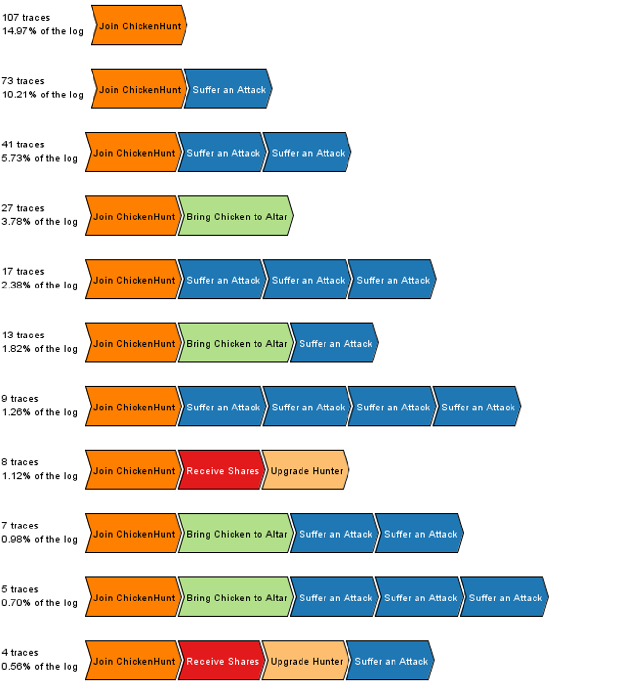
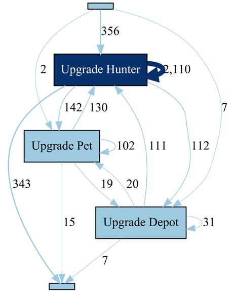
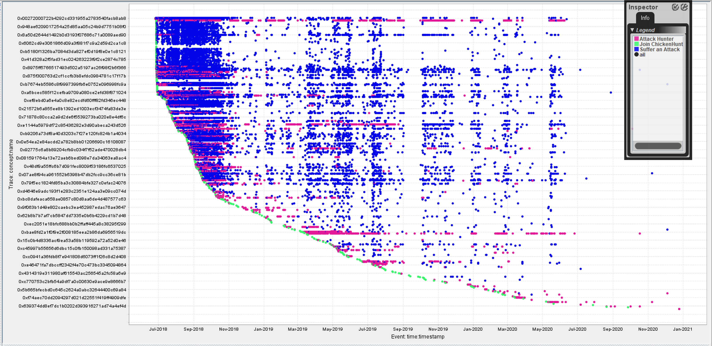

4 ChickenHunt
- DApp Homepage: https://chickenhunt.io/
- DApp Source Code: available on etherscan.io
- ELF Script: ChickenHunt.ethql
- Event Log: Final_ChickenHunt.xes.gz
ChickenHunt is an incremental game that is deployed as a DApp on Ethereum. The game’s goal is to collect chickens through farming and attacking other players. Players also have the option to upgrade the attack (“Upgrade Hunter”), defense (“Upgrade Depot”), and collection capabilities (“Upgrade Pet”) of their avatars. The gas costs for the Ethereum transactions are paid by the player. The game concept includes two types of incentives for playing. Shareholder: through certain transactions, players can become shareholders of the game; and financial reward: players can sacrifice collected chickens for Ether.
4.1 Data Overview
Each trace in the ChickenHunt log captures the events that occur during the game of a ChickenHunt player, i.e., the actions that a ChickenHunt player takes or is part of when playing the game. Each trace has the following attributes:
concept:name(xs:string) - The address of the ChickenHunt player
In addition, each event has a set of standard attributes:
concept:name(xs:string) - The class of the eventtime:timestamp(xs:date) - The timestamp of the block that included the eventlifecycle:transition(xs:string) - the lifecycle transition of each event, for all events set toCompletedby default. This attribute exists to ensure compatibility with XES-certified toolsblockNumber(xs:int) - The number of the block that included the eventtransactionIndex(xs:int) - The index of the transaction that included the eventlogIndex(xs:int) - The index of the log that included the event
The following events can occur during the a player’s game:
- Join ChickenHunt - The player joins the game
- Receive Ethereum from Altar - The player receives Ethereum based on the number of chicken that her or she brought to the altar
altarRecord(xs:int) - The period for which the Ethereum is paid outethereum(xs:int) - The amount of Ether that the player receives
- Bring Chicken to Altar - The player brings hunted chicken to the altar
altarRecord(xs:int) - The period in which the chicken where brought to the altarchicken(xs:int) - The number of chicken
- Attack Hunter - The player attacks another player to steal chicken
defender(xs:string) - The player that gets attackedbooty(xs:int) - The number of chicken that were stolen
- Suffer an Attack - The player must defend against an attack by another player
attacker(xs:string) - The player that is attackingbooty(xs:int) - The number of chicken that were lost to the attacker
- Buy Item - The player purchases an item that improves his abilities
seller(xs:string) - The account that sells the itemitem(xs:int) - The id of the item class that the player purchasedcost(xs:int) - The amount paid for the item
- Sell Item - The player sells an item
buyer(xs:string) - The account that purchased the itemitem(xs:int) - The id of the item class that the player purchasedcost(xs:int) - The amount paid for the item
- Upgrade Hunter - The player improves the abilities of his or her hunter
attribute(xs:string) - The attribute of the hunter that is improvedamount(xs:int) - The amount by which the attribute is increased
- Upgrade Depot - The player improves his or her depot
amount(xs:int) - The amount by which the depot is increased
- Upgrade Pet - The player improves the abilities of one of his or her pets
pet(xs:int) - The index of the pet whose abilities are improvedamount(xs:int) - The amount by which the pet’s abilities are improved
- Buy Store - The player buys a store from another player
- seller (xs:string) - The player who sells the store
- cost (xs:int) - The amount paid for the store
- Sell Store - The player sells a store to another player
- buyer (xs:string) - The player who buys the store
- cost (xs:int) - The amount paid for the store
- Redeem Shares - The player (or the game) cashes out shares
shares(xs:int) - The shares that are cashed outdividends(xs:int) - The dividends received
- Transfer Shares - The player (or the game) transfers shares to another player
shares(xs:int) - The shares that are transferredbuyer(xs:string) - The player that receives the shares
- Receive Shares - The player receives shares from the game or another player
shares(xs:int) - The shares that are receivedseller(xs:string) - The contract the pays out the shares
- Receive Shares Approval - The player receives approval to spend shares of another account
owner(xs:string) - The owner of the sharesshares(xs:int) - The shares that are approved for spending
- Provide Shares Approval - The player allows another player to spend hhis or her shares
spender(xs:string) - The nominated spender for the sharesshares(xs:int) - The shares that are approved for spending
4.2 Preliminary Analysis
We have loaded the event log into several process mining tools to analyze the players’ behavior, but here focus on results obtained with ProM. In the figure below, the most common behavior of players is shown: 107 players out of the 715 cases join chicken hunt and never do anything else. Several frequent traces show players joining, and being attacked (one or more times) without doing anything else. Some players follow a similar pattern, but first they succeed with bringing chick-ens to the altar. These insights could help understand why players stop early, and be used by the developers when working on improvements. Players who are more actively playing the game have highly varied individual traces: 402 distinct traces exist for the 715 cases.

In the directly follows graph shown below, we analyzed the order and frequency of the different types of upgrades. Upgrading the hunter avatar is clearly the most popular choice, and by far the most frequent first and last upgrade. In other words, active players may also upgrade their pet and their depot, but they typically come back to further upgrade their hunter. These insights, too, appear to be of value for the providers of such a game. Next, we direct our attention to attack behavior.

The dotted chart below shows only the events from joining, attacking, and suffering from an attack. It can be observed that only few players attack others, but a large number of players are suffering from attacks. Additionally, the attacks appear to happen in synchronized waves, as indicated by the vertical patterns in the dotted chart. The reasons behind those waves may well be connected to the gas prices (and accordingly the fees) per transaction on Ethereum (see e.g., etherscan): from a visual comparison of the time lines, higher gas prices on Ethereum may well correlate with periods without attacks on ChickenHunt. Presumably the attackers stole chickens from ordinary users, brought them to the altar, and received Ether in return, all of which entailing transactions with associated fees. If the returns in Ether are not high enough, the fees may well render this operation a financial loss.
